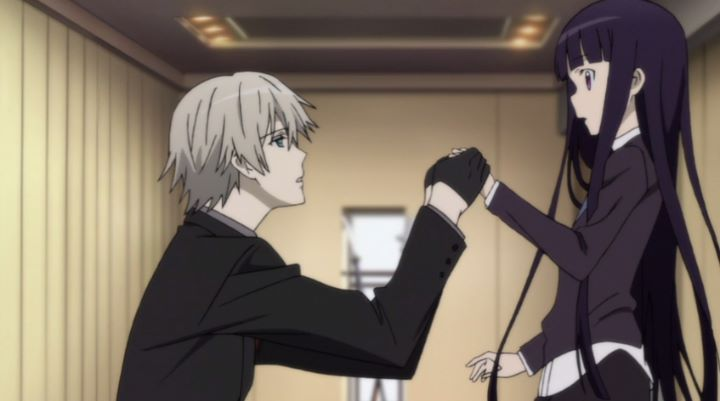

"Inu x Boku - Secret Service" was a bit of a blind buy, judged largely on a brief trailer that featured visuals from the opening theme of the series. I wasn't certain what exactly I was getting into. Some shows are a nice surprise that way. Another disclaimer is that I am a man, and the show appears to be meant primarily for female viewers, specifically those who might want a dark romance, a la "Twilight" or "50 Shades of Grey" (of course, men are fully allowed to find entertainment here as well, should they choose). Whatever your taste, I can't imagine anyone thinking "Inu x Boku" was any good, however. At most, it's a "guilty pleasure," a term suitable in multiple contexts.Set in an alternate Japan, there are humans who contain the blood of Yokai ancenstors, granting them similar powers, effectively making them monsters. Ririchiyo is a young dark-haired girl, at first appearing to be human to the viewer, but revealed to have such powers herself. She also has a "sharp-tongue," a bad habbit of responding coldly, a natural reflex from her upbringing and wealthy status, but a trait she despises in herself, knowing how it hurts others. Ririchiyo moves into a special mansion, a home to several other Yokai hiding as humans, and each assigned a bodyguard from the "Secret Service" to proect them from other monsters or ill-intentioned humans. Riri is surprised to get her own bodyguard, Soshi Miketsukami, a dog-type-monster-human. He's handsome, well-dressed, well-mannered, and utterly devoted to Ririchiyo... not unlike a dog. And he insists on being thought of as her "pet," too. The premise is most similar to "Black Butler," an anime that broadcasted a few years earlier, with hints of "Natsume's Book of Friends," and ending themes with visuals and music not unlike "Bakemonogatari" (multiple endings, one for each character, are utilized). Like "Black Butler," there are multiple genres at play, and in "Inu x Boku," they blend even more poorly. There are glimpses and hints of a much larger world of lore (a summary of the manga far outreaches what the anime attempts), but much of it is ignored for the sake of a simple "slice-of-life" comedy, not obvious to someone looking at the cover-art of the DVD.The three genres at work here include: 1) Supernatural action/thriller, 2) Slice-of-life comedy, and 3) fetish-driven romance. I already mentioned that 1) didn't get nearly enough attention, and would have been the most interesting of the three. 2) clumsily becomes the focus, with a wide array of randomly-eccentric one-dimensional characters living at the house ("flamboyant one," "self-described delinquent," "lazy man," etc.), and a series of random events meant with a not-so-subtle purpose ("let's have a scavenger hunt that requires you to get a signature from everyone in the house!... Hey, this is a great way to introduce everyone to the viewer!"). This makes up about 80% of the show. It can be funny at times (Ririchiyo, an internally-nice character, is adorable when she embarresses herself in front of the others), but removes even the slightest semblance of plot, leaving me to wonder why I was watching (and why an OVA episode was added to the 12-episode series... there was no purpose to have more than 3 or 4 episodes in the first place).  But then there's 3), which could have been as interesting as 1), but conflicts with 2) in a way that makes the whole thing feel off. As advertised, we have a series of well-dressed handsome men-butler-servants, kissing hands or feet in obidience, and the "lolitta-complex" when it comes to Riri and the other younger girls. One male character appears to prefer "other men," and an older female character prefers "younger girls," adding to the mischief. But there's also one character, an older man arranged to be engaged to Ririchiyo, who has a proud S&M complex, declaring all people and things in life to be labelled as either "masochism" or "sadism." And one important male character's backstory is revealed in a late episode, showing he self-taught himself to "seduce" women in order to leave a tragic upbringing as a teenager. Ririchiyo's own feelings towards her servant Miketsukami grow to love, even though "she knows it's wrong."It's all cheap, steamy thrills, and that's great, but is severely at odds with the relatively innocent humor of the show, and there isn't enough of it to excite viewers looking for that specific motif. It's a shame, for I think "Inu x Boku" would have been much stronger if it dedicated more time to either the supernatural fantasy or the sexy fantasy, but instead it leaves us with a lot of funny but meaningless filler. I imagine the manga, or at least the fanfiction, to be a bit more satisfying. The production values are a bit weak, especially for a series that released in 2012 (I'd swear it was at least five years older). Animation is limited, and seems to get a little worse as the show goes on. The gothic visual aesthetic is cool, but has been done better elsewhere, and some of the character designs don't sit well with me. I haven't yet mentioned that, for the sake of jokes, as much as half of the time is spent with characters in exaggerated "chibi" mode, not a bad thing for variety, but unexpected. I have to point out Sentai FIlmworks' English dub... it's not bad (although a couple characters really grated on my ears), even though it kinda feels standard, like they didn't care about what they were doing. A few other issues suggest that was really the case: one line a the end of episode 6, for example, is spoken by an notciably different actor, either a mistake in who was supposed to say the line, or a test-clip that wasn't supposed to be burned on the consumer disc. There's also episode 13, the OVA, which suddenly uses honorifics that weren't used prior in the series. Quality control is important."Inu x Boku - Secret Service" wasn't meant for me, but even I would have enjoyed it, if not for the giant missed opportunities with the story and world-building, or even the fanservice. The visual design, especially for the opening and ending themes, might be worth looking up... but it's not a good thing when I'd rather watch the endings on repeat then the main show.
- "Ani" More reviews can be found at : https://2danicritic.github.io/ Previous review: review_Indian_Summer Next review: review_Is_It_Wrong_To_Pick_Up_Girls_In_A_Dungeon_-_Arrow_of_the_Orion